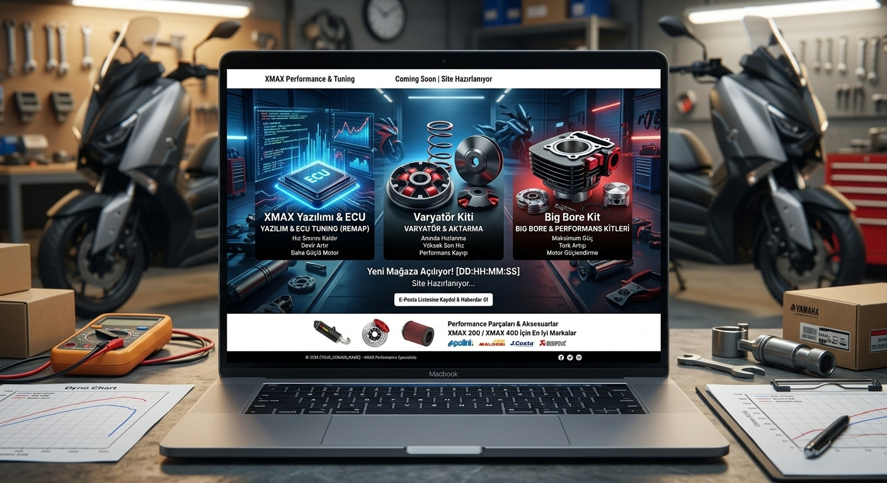

Özel ECU Kalibrasyonu & Remap
BMK1 ECU için Dyno üzerinde özel olarak geliştirilmiş yakıt ve ateşleme haritası.
- Optimized AFR geçişleri
- Devir kesici düzenlemesi
- Hız / Tork limitör güncellemeleri
Yamaha XMAX 300 Özel Parça, Aksesuar ve Yazılım Çözümleri

BMK1 ECU için Dyno üzerinde özel olarak geliştirilmiş yakıt ve ateşleme haritası.
Alt ve orta devirlerde yüksek ivmelenme sağlayan özel açılandırılmış varyatör kiti.
Gidon kapağı yerine tam oturan, PETG malzemeden üretilmiş ekstra saklama gözü.